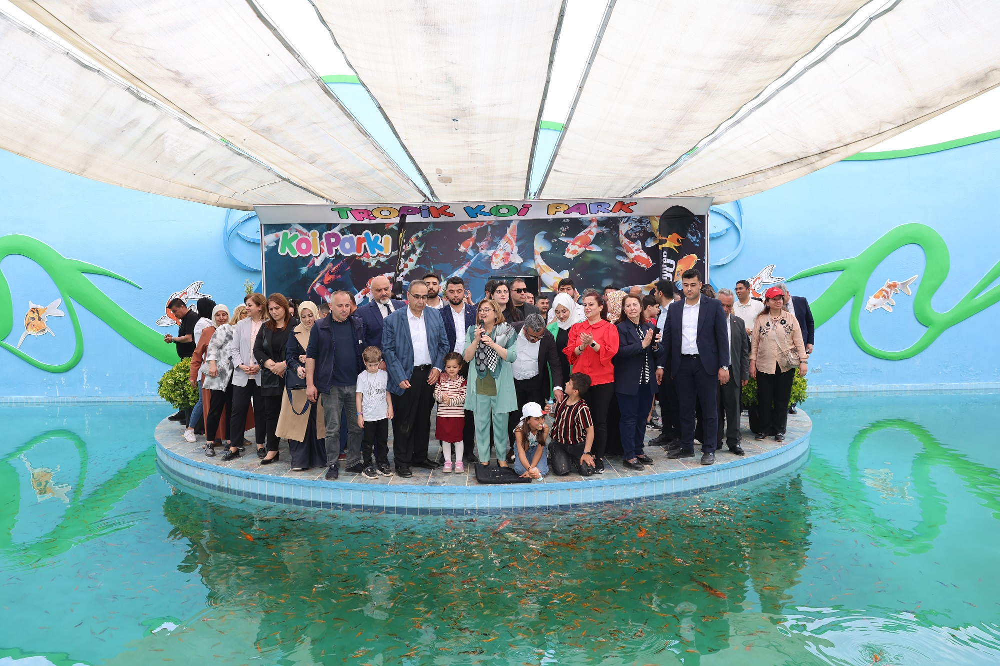

Gaziantep Hayvanat Bahçesi’nde düzenlenen Çocuklara Yönelik Doğa Atölyeleri, minik ziyaretçilere doğayı tanıma, hayvan sevgisi kazanma ve çevre bilincini geliştirme fırsatı sunan özel etkinliklerdir. Bu atölyelerde çocuklar rehberler eşliğinde farklı hayvan türlerini tanır, onların yaşam döngüsü ve ekolojik önemi hakkında bilgi edinir. Program kapsamında hayvan besleme gösterileri ile çocuklar hayvanların doğal davranışlarını gözlemleme imkânı bulurken, geri dönüşüm ve çevre koruma temalı interaktif etkinliklerle doğa bilinci pekiştirilir. Ayrıca resim, oyun ve küçük deneylerle desteklenen bu atölyeler, çocukların hem eğlenmesini hem de öğrenmesini sağlar. Çocuklara Yönelik Doğa Atölyeleri, Gaziantep Hayvanat Bahçesi’nde eğitici ve keyifli bir deneyim olarak doğayla bağ kurmalarına yardımcı olur ve unutulmaz anılar kazandırır.